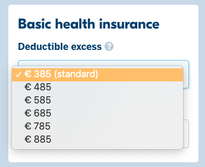

Aplicando para o seguro de saúde obrigatório
Ao imigrar para a Holanda e começar a trabalhar na Holanda, você é obrigado a fazer o seguro de saúde padrão holandês (também chamado de: seguro de saúde "básico" ou seguro de saúde "governamental").
O seguro de saúde padrão deve ser aplicado dentro de 4 meses após a obrigação (direito ao seguro). Normalmente, dentro de 4 meses após entrar na Holanda e/ou começar a trabalhar na Holanda.
Cuidado com o prazo
Se você perder esse prazo e não solicitar a tempo, a pessoa é obrigada a pagar o prêmio do seguro de saúde padrão (mesmo com uma multa de 30%!).
Mas só pode reivindicar custos médicos quando a solicitação for aprovada.
Valor da Multa em 2019: € 402,24.
Regras
Você pode escolher sua própria companhia de seguros de saúde, no entanto, isso só pode ser alterado uma vez por ano, com efeitos a partir de 1º de janeiro. Também é possível adicionar ou remover pacotes extras de saúde uma vez por ano.
Onde comparar preços
- Comparador de seguros: zorgwijzer.nl
- Existem outros
Como funciona o "Eigen Risico"
Todos os anos, o governo define o valor legal fixo do seguro eigen risico. € 385.
Ou seja, você paga os primeiros €385 em despesas médicas. O que exceder este valor será pago diretamente por sua seguradora, dependendo da política escolhida.
No entanto, você também pode negociar esses custos escolhendo uma franquia voluntária de até € 885 a mais. Dessa forma, sua "mensalidade" pelo seguro básico fica mais barata. No entanto, você pode eventualmente ter mais custos com saúde do que o pacote básico de seguro de saúde.

Estudantes internacionais
Os estudantes internacionais nem sempre são obrigados a fazer um seguro de saúde holandês. Se eles são obrigados ou não, depende de vários fatores, como a duração de sua estadia, se eles estão fazendo um estágio ou trabalhando, e se eles têm seguro em seu país de origem. Saiba mais sobre o seguro de saúde holandês para estudantes internacionais.
Leia mais em: iamexpat.nl/students